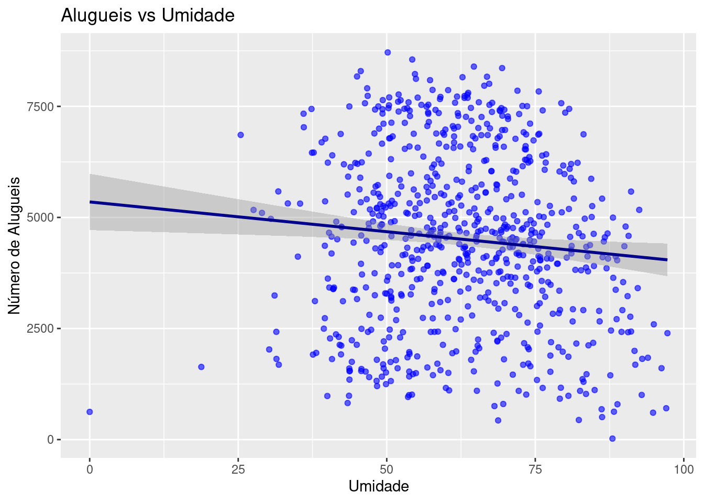

library(lmtest)
>> Loading required package: zoo
>>
>> Attaching package: 'zoo'
>> The following objects are masked from 'package:base':
>>
>> as.Date, as.Date.numeric
library(ggplot2)
library(dplyr)
library(tidyr)
library(readr)Prova Prática 1
Modelagem Estatística
1 Análise Descritiva dos Dados
Inicialmente, faremos uma análise prévia dos nossos dados. Provomendo uma Análise Exploraória dos Dados (AED) para entendermos melhor o nosso conjunto de dados.
Carregando bibliotecas
Dados
dados <- read_csv("~/prog/modelagem_estatistica/prova_pratica_1/day.csv")
>> Rows: 730 Columns: 16
>> ── Column specification ────────────────────────────────────────────────────────
>> Delimiter: ","
>> chr (1): dteday
>> dbl (15): instant, season, yr, mnth, holiday, weekday, workingday, weathersi...
>>
>> ℹ Use `spec()` to retrieve the full column specification for this data.
>> ℹ Specify the column types or set `show_col_types = FALSE` to quiet this message.head(dados)
>> # A tibble: 6 × 16
>> instant dteday season yr mnth holiday weekday workingday weathersit temp
>> <dbl> <chr> <dbl> <dbl> <dbl> <dbl> <dbl> <dbl> <dbl> <dbl>
>> 1 1 01-01-… 1 0 1 0 6 0 2 14.1
>> 2 2 02-01-… 1 0 1 0 0 0 2 14.9
>> 3 3 03-01-… 1 0 1 0 1 1 1 8.05
>> 4 4 04-01-… 1 0 1 0 2 1 1 8.2
>> 5 5 05-01-… 1 0 1 0 3 1 1 9.31
>> 6 6 06-01-… 1 0 1 0 4 1 1 8.38
>> # ℹ 6 more variables: atemp <dbl>, hum <dbl>, windspeed <dbl>, casual <dbl>,
>> # registered <dbl>, cnt <dbl>
summary(dados)
>> instant dteday season yr
>> Min. : 1.0 Length:730 Min. :1.000 Min. :0.0
>> 1st Qu.:183.2 Class :character 1st Qu.:2.000 1st Qu.:0.0
>> Median :365.5 Mode :character Median :3.000 Median :0.5
>> Mean :365.5 Mean :2.499 Mean :0.5
>> 3rd Qu.:547.8 3rd Qu.:3.000 3rd Qu.:1.0
>> Max. :730.0 Max. :4.000 Max. :1.0
>> mnth holiday weekday workingday
>> Min. : 1.000 Min. :0.00000 Min. :0.000 Min. :0.0000
>> 1st Qu.: 4.000 1st Qu.:0.00000 1st Qu.:1.000 1st Qu.:0.0000
>> Median : 7.000 Median :0.00000 Median :3.000 Median :1.0000
>> Mean : 6.526 Mean :0.02877 Mean :2.997 Mean :0.6836
>> 3rd Qu.:10.000 3rd Qu.:0.00000 3rd Qu.:5.000 3rd Qu.:1.0000
>> Max. :12.000 Max. :1.00000 Max. :6.000 Max. :1.0000
>> weathersit temp atemp hum
>> Min. :1.000 Min. : 2.424 Min. : 3.953 Min. : 0.00
>> 1st Qu.:1.000 1st Qu.:13.812 1st Qu.:16.890 1st Qu.:52.00
>> Median :1.000 Median :20.466 Median :24.368 Median :62.62
>> Mean :1.395 Mean :20.319 Mean :23.726 Mean :62.77
>> 3rd Qu.:2.000 3rd Qu.:26.881 3rd Qu.:30.446 3rd Qu.:72.99
>> Max. :3.000 Max. :35.328 Max. :42.045 Max. :97.25
>> windspeed casual registered cnt
>> Min. : 1.500 Min. : 2.0 Min. : 20 Min. : 22
>> 1st Qu.: 9.042 1st Qu.: 316.2 1st Qu.:2502 1st Qu.:3170
>> Median :12.125 Median : 717.0 Median :3664 Median :4548
>> Mean :12.764 Mean : 849.2 Mean :3659 Mean :4508
>> 3rd Qu.:15.626 3rd Qu.:1096.5 3rd Qu.:4783 3rd Qu.:5966
>> Max. :34.000 Max. :3410.0 Max. :6946 Max. :8714var_numeric <- dados %>% select_if(is.numeric)
summarize_all(var_numeric, list(mean = mean, median = median, sd = sd))
>> # A tibble: 1 × 45
>> instant_mean season_mean yr_mean mnth_mean holiday_mean weekday_mean
>> <dbl> <dbl> <dbl> <dbl> <dbl> <dbl>
>> 1 366. 2.50 0.5 6.53 0.0288 3.00
>> # ℹ 39 more variables: workingday_mean <dbl>, weathersit_mean <dbl>,
>> # temp_mean <dbl>, atemp_mean <dbl>, hum_mean <dbl>, windspeed_mean <dbl>,
>> # casual_mean <dbl>, registered_mean <dbl>, cnt_mean <dbl>,
>> # instant_median <dbl>, season_median <dbl>, yr_median <dbl>,
>> # mnth_median <dbl>, holiday_median <dbl>, weekday_median <dbl>,
>> # workingday_median <dbl>, weathersit_median <dbl>, temp_median <dbl>,
>> # atemp_median <dbl>, hum_median <dbl>, windspeed_median <dbl>, …Aqui está alguns histogramas para vermos o comportamento de algumas variáveis.
var_numeric %>%
pivot_longer(cols = everything()) %>%
ggplot(aes(value)) +
geom_histogram(bins = 30, fill = "steelblue", color = "black") +
facet_wrap(~name, scales = "free") +
theme_minimal() +
labs(title = "Distribuição das variáveis numéricas")
Boxplots.
var_numeric %>%
pivot_longer(cols = everything()) %>%
ggplot(aes(x = name, y = value, fill = name)) +
geom_boxplot(alpha = 0.7) +
theme_minimal() +
theme(legend.position = "none") +
labs(title = "Boxplot das variáveis numéricas", x = "Variáveis", y = "Valores")Aqui apresentamos algumas relações, segue-as.
Entre Alugueis e Temperatura;
ggplot(dados, aes(x = temp, y = cnt)) +
geom_point(alpha = 0.6) +
geom_smooth(method = "lm", color = "red") +
labs(title = "Alugueis vs Temperatura", x = "Temperatura", y = "Número de Alugueis")
>> `geom_smooth()` using formula = 'y ~ x'# Relacionamento entre umidade e alugueis
ggplot(dados, aes(x = hum, y = cnt)) +
geom_point(alpha = 0.6, color = "blue") +
geom_smooth(method = "lm", color = "darkblue") +
labs(title = "Alugueis vs Umidade", x = "Umidade", y = "Número de Alugueis")
>> `geom_smooth()` using formula = 'y ~ x'
# Gráfico de barras para dias da semana
ggplot(dados, aes(x = factor(weekday), y = cnt, fill = factor(weekday))) +
geom_bar(stat = "identity", alpha = 0.8) +
theme_minimal() +
theme(legend.position = "none") +
labs(title = "Alugueis por Dia da Semana", x = "Dia da Semana", y = "Número de Alugueis")# Gráfico de barras para estação do ano
ggplot(dados, aes(x = factor(season), y = cnt, fill = factor(season))) +
geom_bar(stat = "identity", alpha = 0.8) +
theme_minimal() +
theme(legend.position = "none") +
labs(title = "Alugueis por Estação do Ano", x = "Estação", y = "Número de Alugueis")2 Modelo de Regressão Linear
Agora, vamos ajustar um modelo de regressão linear. Vamos usar este modelo:
\[ Y = \beta_0 + \beta_1 \cdot temp + \beta_2 \cdot hum + \beta_3 \cdot windspeed + \beta_4 \cdot holiday + \beta_5 \cdot workingday + \beta_6 \cdot season + \beta_7 \cdot weekday \]
No caso, foi preferível o uso de um GLM.
formula <- cnt ~ temp + hum + windspeed + holiday + workingday + season + weekday
# Ajuste do modelo
model <- lm(formula, data = dados)
# Resumo do modelo
summary(model)
>>
>> Call:
>> lm(formula = formula, data = dados)
>>
>> Residuals:
>> Min 1Q Median 3Q Max
>> -4642.8 -989.2 -204.7 1051.0 3863.5
>>
>> Coefficients:
>> Estimate Std. Error t value Pr(>|t|)
>> (Intercept) 3316.011 347.844 9.533 < 2e-16 ***
>> temp 142.876 7.150 19.983 < 2e-16 ***
>> hum -34.875 3.703 -9.417 < 2e-16 ***
>> windspeed -58.497 10.202 -5.734 1.44e-08 ***
>> holiday -496.899 312.211 -1.592 0.1119
>> workingday 83.024 111.817 0.743 0.4580
>> season 412.739 49.410 8.353 3.39e-16 ***
>> weekday 50.275 25.233 1.992 0.0467 *
>> ---
>> Signif. codes: 0 '***' 0.001 '**' 0.01 '*' 0.05 '.' 0.1 ' ' 1
>>
>> Residual standard error: 1358 on 722 degrees of freedom
>> Multiple R-squared: 0.513, Adjusted R-squared: 0.5083
>> F-statistic: 108.7 on 7 and 722 DF, p-value: < 2.2e-163 Avaliando a Qualidade do Modelo
Resíduos:
par(mfrow = c(2, 2))
plot(model)
cat("R² ajustado:", summary(model)$adj.r.squared, "\n")
>> R² ajustado: 0.5083184Testando a normalidade dos resíduos:
shapiro.test(residuals(model))
>>
>> Shapiro-Wilk normality test
>>
>> data: residuals(model)
>> W = 0.98833, p-value = 1.46e-05Checando a homocedasticidade:
bptest(model)
>>
>> studentized Breusch-Pagan test
>>
>> data: model
>> BP = 64.24, df = 7, p-value = 2.137e-114 Interpretação dos Coeficientes Estimados (\(\beta\) )
\(\textbf{Qual é o impacto da temperatura no número de aluguéis?}\) Bom, nota-se que em dias quentes, as pessoas tem um tendencia maior a alugar mais bicicletas. Isso pode ser devido ao fato de que caminhar não seja uma opção viável em dias quentes.
\(\textbf{Como os dias de feriado afetam os alugueis em comparação com dias normais?}\) Parece um resultado imediato, com mais pessoas em casa (feriado), podemos concluir que a demanda cai bastante. Porém, os resquicios de pessoas que alugam as bicicletas se deve à passeios, robby, ou algo do gênero.
\(\textbf{Há uma relação clara entre a velocidade do vento e o número de bicicletas alugadas?}\) Não, a velocidade do vento não aparenta ter um impacto significativo nos aluges de bicicletas.
5 Conclusão
Ponto de vista logistico e empresárial: Precisa-se encontrar alguma forma de promover novos algueis em feriados. Ou apenas incentivar o uso de bicicletas, acarretaria em um aumento considerável de alugueis. Ponto de vista do consumidor: Se tiver quente, alugue. E se puder, fique em casa. Mas não se esqueça de andar de bicicleta é saudável.